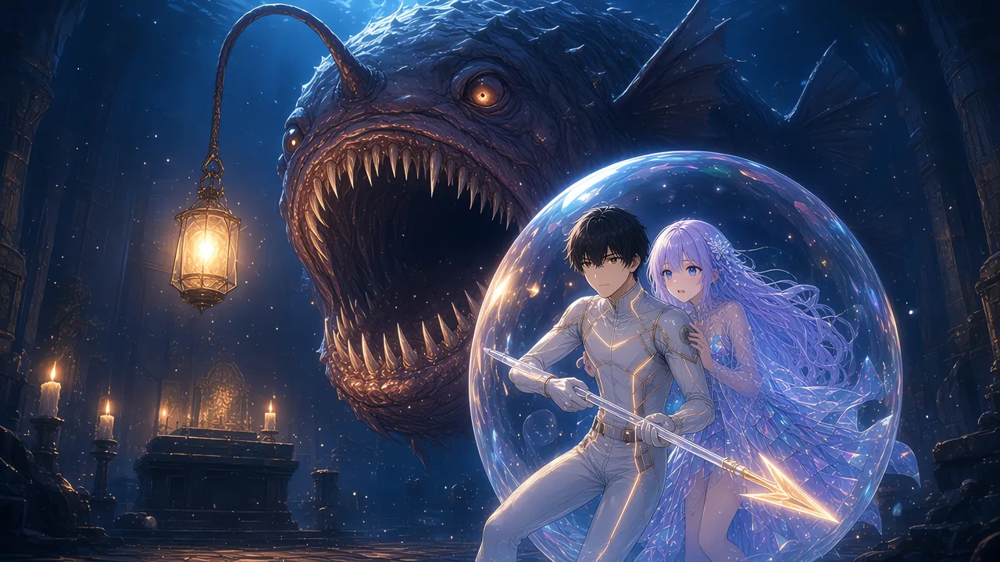

深度800mの礼拝堂は、群青の底に沈んでいた。
【深度 -800m／薄明層】
石のアーチが、いくつも重なっている。崩れかけた柱に、光珊瑚がからみついている。窓には、色の抜けたステンドグラスの枠だけが残っていた。
その奥で、灯りが揺れていた。
祭壇の上に、無数の小さな灯り。蝋燭の炎のような琥珀色が、水の中で、ゆらゆらと立っている。
【祭壇の灯り 40】
四十の灯り。沈んだ礼拝堂に、今も残っている光。
ウタが、僕の泡殻の陰で身をかたくした。
「いる」
言われなくても、分かった。
礼拝堂の床には、虹色の薄いかけらが、いくつも沈んでいた。
割れた泡殻の破片だった。告知を見て、先に来た誰かのものだろう。かけらは床の上でかすかに光り、やがて溶けるように消えていく。
ここで、もう何人も割れている。
祭壇の向こうの暗がりで、もう一つ、琥珀色の光が揺れていた。
祭壇の灯りと、まったく同じ色。けれど、それは高いところで、一本の細い竿の先にぶらさがっていた。
＊
礼拝堂の入口に、石の箱が置かれていた。
蓋の上に、誰かが彫った文字。〈先に行く人へ〉。
開けると、銛が二本、並んで眠っていた。
【珊瑚の銛：DEF +8】
【硝子の銛：FRG +5】
【どちらか一つを選んでください】
珊瑚の銛は、太く、重く、頼もしい。
硝子の銛は、細く、透きとおっていて、今にも折れそうだった。光にかざすと、穂先の縁が、祭壇の灯りを拾って金色に光る。
ステータスをひらく。
？？？ Lv 8 ジョブ：銛撃士
HP 410 LUX 58 STR 34
MAG 11 DEF 25 SPD 38
LCK 11 PRS 90 FRG 12
FRGに触れる。
【FRG（儚さ）：高いほど強く、高いほど壊れやすい】
あの一行が、もう一度出た。
硝子の銛を、手にとってみる。
【FRG 12 → 17】
【与ダメージ ×1.17／被ダメージ ×1.17】
強くなるぶん、同じだけ脆くなる。
まっとうな設計なら、ここは珊瑚の銛だ。初めてのボスで、守りを捨てる理由はない。
でも。
僕は、設計した側の顔を想像していた。この二本を並べた誰かは、どちらを選ばせたかったのだろう。安全な数字と、危うい数字。危うい数字のほうに、こんなにきれいな形を与えた人の気持ちを、確かめてみたかった。
「こっちにする」
硝子の銛を握る。
泡殻の膜が、少しだけ薄くなった。虹色の干渉が、さっきより鮮やかに流れている。
壊れやすくなって、きれいになった。
「ルカ」
ウタが、僕の膜に手を当てていた。
「うすくなった」
「うん。そういう銛なんだ」
ウタは何も言わず、手を離さなかった。
＊
祭壇へ、踏みこむ。
暗がりが、動いた。
チョウチンアンコウだった。
礼拝堂の天井に届きそうなほど、大きい。皮膚は古い石のように黒く、目だけが、提灯と同じ琥珀色に光っている。
【灯喰い HP 2,400】
頭上に、長いゲージが一本。
灯喰いが、口をひらいた。
牙の並んだ暗い口の奥へ、祭壇の灯りが、吸いこまれていく。一つ、また一つ。炎の形のまま、糸を引くように細くなって、闇の中に消える。
【祭壇の灯り 40 → 37】
そのたびに、近くの珊瑚から色が抜けた。
翠だった枝が、灰色になり、白くなる。灯りが一つ食べられるごとに、珊瑚が一本ずつ、白い骨になっていく。
灯りと珊瑚が、つながっているのだ。
灯喰いの提灯が、食べた灯りの色で、いっそう強く光った。

「ウタ、下がってて」
僕は、銛を構えた。
＊
突く。
「63」
ぱちん。
「67」「61」
浅瀬とは、手ごたえの桁が違った。数字の泡が、群青の中で大きくふくらんで、琥珀の光を映して弾ける。
硝子の銛は、軽かった。軽いぶん、速い。突くたびに、穂先から光の粉が散る。
灯喰いの尾が、横から来た。
「98」
赤い数字。
泡殻が、たわんだ。HPのゲージが四分の一ほど持っていかれる。浅瀬の痛みとは比べものにならない。
×1.17。数字にすれば、たった二割弱。けれど、体で受けると、その二割はひどく重かった。
ゲージに、細い線が一本、走った。
ひびだ。
HPが減ると、ゲージそのものがひび割れていく。泡殻の厚みを、そのまま絵にしているのだ。
よくできている、と思った。思いたくなかった。
灯喰いの提灯が、ふっと暗くなった。
来る。
体が先に動いた。横へ跳ぶ。さっきまで僕のいた場所を、巨大な顎が噛み砕いた。水が渦を巻く。
提灯が、暗くなってから一拍半。それが噛みつきの合図だ。
「64」「66」「CRITICAL 105」
金色の縁どりの数字が、灯喰いの鼻先で、ひときわ大きく弾けた。
三桁。
初めての三桁だった。
「わあ」と、背中のほうでウタの声がした。浅瀬で覚えた、その場で生まれる「わあ」だった。
その勢いのまま、もう二撃。
「69」「62」
＊
【灯喰い HP 1,843】
灯喰いが、身をよじって祭壇へ戻った。
口がひらく。灯りが吸いこまれる。
【祭壇の灯り 37 → 35】
【灯喰い HP +120 → 1,963】
回復した。
灯りを食べるたびに、一つにつき60。そして、珊瑚がまた二本、白くなる。
食べられる直前、灯りの一つが、僕の目の前を横切った。
炎の芯に、細い文字が揺れていた。
〈ここで待ってる〉
浅瀬の珊瑚の枝を流れていたのと、同じ種類の光だった。誰かが、いつか、誰かに言った言葉。
その一行ごと、灯りは闇に吸いこまれた。すぐ横の珊瑚の枝から、文字の流れが止まる。翠が抜けて、白い雪のような静けさだけが残った。
灯りは、ただの明かりではなかった。この場所に残った、誰かの声なのだ。
「やめろ」
声が出た。誰に向けたのか、自分でも分からなかった。
削っても、食べられたら戻る。戻るたびに、この礼拝堂から色が消える。
攻撃の手を、休めるわけにはいかなかった。
突く。突く。突く。提灯が暗くなったら跳ぶ。跳んだ先から、また突く。
「62」「69」「65」
尾が来る。
「103」
ひびが、二本になった。HPは、もう半分ほどしか残っていない。
そのとき、背中のほうで、何かが聞こえた。
歌だった。
ウタが、歌っていた。言葉のない、六つほどの音。上がって、少し下がって、また上がる。浅瀬で、最初に聞いた旋律。
体が、軽くなった。
【SPD 38 → 41】
表示の右側に、効果元の欄がある。いつもなら、そこにジョブやスキルの名前が入る。
【効果元：――】
空欄だった。
ウタには、まだジョブがない。歌潮士の結晶にも触れていない。なのに、歌が数字を動かしている。
この海のシステムには、彼女の歌を参照する項目がないのだ。だから、効果元が書けない。
システムの外側から、数字が届いている。
「ウタ、そのまま！」
ウタは、うなずくかわりに、歌を一段高くした。
＊
三つ速くなっただけで、海の見え方が変わった。
提灯が暗くなる。一拍半を待たずに、跳べる。跳んだ勢いのまま、横腹へ。
「67」「70」「63」「CRITICAL 99」
足していく。ゲージの残りと照らしあわせる。前の仕事で、何千回もやった計算だった。
「64」「60」「71」「59」「66」「61」「63」「64」
【灯喰い HP 960】
灯喰いが、また祭壇へ向かう。
今度は、その前に回りこんだ。祭壇と顎のあいだに、僕の泡殻を割りこませる。
顎が、僕の鼻先で止まった。灯りを食べるために、まっすぐ祭壇を狙っていたから。
突く。
「68」
灯喰いが、怯んだように身を引いた。
いける。
熱が、胸の中で泡立っていた。
楽しい、と思ってしまった。
突く。弾ける。突く。弾ける。
「65」「61」「69」「66」
「62」「60」「64」「59」「63」「61」「65」「60」「65」
尾が来た。避けきれなかった。
「107」
ひびが、三本になる。HPのゲージが、端のほうでかろうじてつながっている。
残り、102。
それでも、僕は数えていた。
【灯喰い HP 72】
残り、三パーセント。
72。
僕の一撃は、低く出れば58、高く出れば71。
71。72には、一つだけ届かない。どんな目が出ても、あと二撃いる。
クリティカルが出れば、話は別だ。その確率は、一割ちょっと。
数字は、全部見えていた。
見えていたから、怖くなかった。
ウタの歌は、まだ続いていた。旋律が上がりきる手前で、ふっと消えて、また最初から始まる。終わらない歌だった。
僕は、銛を引いた。次の一撃のための、ほんの少しの溜め。
金色が出るか。出なければ、もう一撃。
賽を振る直前の、あの一瞬の静けさ。何百回も人に味わわせてきた瞬間を、僕は初めて、自分の体で味わっていた。
悪くない、と思った。この瞬間のために、数字はあるのだ。
＊
灯喰いが、祭壇を見た。
【祭壇の灯り 35】
まだ、灯りはある。食べに行く。その隙に、背中から突けばいい。
けれど、灯喰いは祭壇へ向かわなかった。
琥珀の目が、ゆっくりと動いた。
僕の背中の、さらに後ろへ。
歌っている、ウタへ。
ウタは、光っていた。
透きとおった体の内側に、淡い光がともっている。歌うたびに、その光が少し強くなる。四角い欠片の衣が、一枚一枚、灯りのように明滅していた。
祭壇の灯りと、同じ色だった。
提灯が、暗くなる。
一拍半。
「ウタ！」
僕は跳んだ。噛みつきの来る方向とは、逆に。避けるためではなく、間に入るために。
ウタの前に、泡殻ごと体をねじこむ。
視界が、灯喰いの口で埋まった。牙の向こうに、食べられた灯りが、ぼんやりと溜まっているのが見えた。
硝子の銛を突きだす。
届いたかどうか、分からなかった。数字は、浮かばなかった。
かわりに、膜が鳴った。
ひびの入った泡殻が、きしんで、たわんで、限界まで薄く伸びる。
×1.17。
いい銛だった。いい選択だった、と、まだ思っていた。
泡が割れていく、そのほんの一瞬。
虹色の破片の向こうで、僕は見た。
僕の後ろにいたはずのウタが、灯喰いの口の中へ、灯りと同じ形に細くなって、吸いこまれていくのを。
手を伸ばした。
指は、もう膜の外に届かなかった。
HPが0になる音は、思っていたよりずっと小さかった。――パチン。